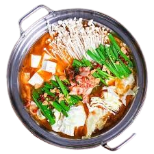

- 8 cups chicken or vegetable broth
- 200g thinly sliced beef or chicken
- 200g firm tofu, cubed
- 1 cup mushrooms (shiitake or enoki)
- 1 cup napa cabbage, chopped
- 1 cup assorted vegetables (bok choy, spinach, carrots)
- 200g cooked noodles or vermicelli
- Dipping sauces (soy sauce, chili, sesame oil)
-
- Arrange all meats, tofu, and vegetables on serving plates.
- Prepare dipping sauces in small bowls for each guest.
- In a large pot or hotpot cooker, bring broth to a gentle boil at the table.
- Let everyone add ingredients of their choice into the simmering broth to cook.
- For extra flavor, add garlic, ginger, or a chili pepper to the broth if desired.
-
- Cook meats and vegetables in the simmering broth until done, using chopsticks or a slotted spoon.
- Add noodles last to soak up the flavors of the broth.
- Dip cooked items in your favorite sauces before eating.
-
- Enjoy hotpot communally, refilling the pot with more broth as needed.
- Finish by drinking the rich, flavorful soup at the end of the meal.
- Hotpot is best enjoyed with friends and family around the table!